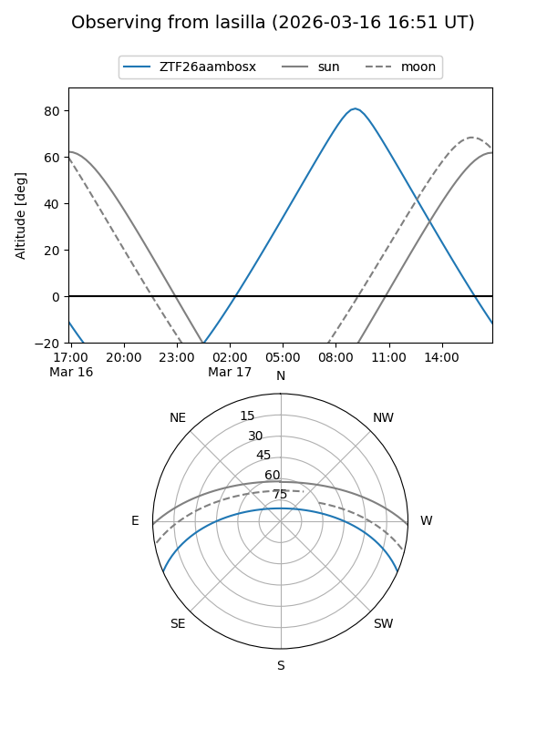
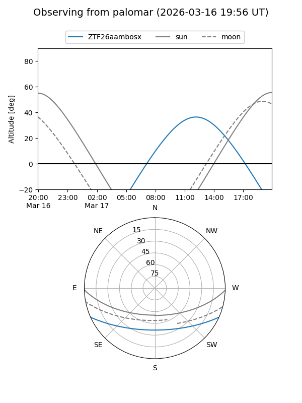

ZTF26aambosx
Target ZTF26aambosx at 2026-03-16 13:25
Aliases and brokers:
FINK: link
Lasair: link
ALeRCE: link
alt names
ZTF26aambosx (ztf,fink_ztf)
Coordinates:
equatorial (ra, dec) = 240.1692,-20.09296
equatorial (HMS+DMS) = 16:00:40.61,-20:05:34.64
galactic (l, b) = (352.1195,+24.20890)
Flags:
Photometry:
last ztfg=16.57
1 ztfg detections
Lightcurve
Visibility


Additional plots